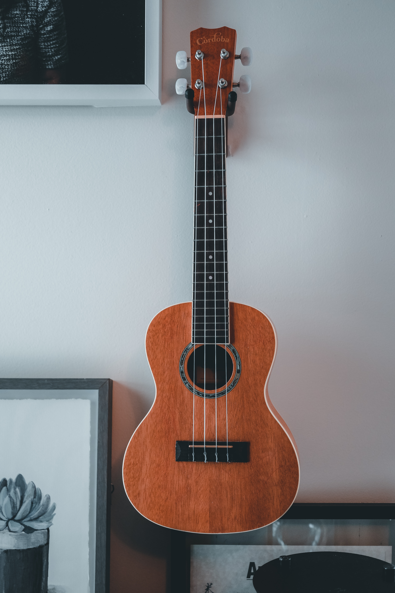

Guitar | Ukulele
My journey into the world of guitar playing has been a profound and transformative experience, one that
has resonated deeply with my soul. From the very first strum of the strings to the intricate finger
placements on the fretboard, each step of this musical odyssey has been a testament to dedication and
passion. I vividly remember the initial moments of uncertainty, the struggle to synchronize my fingers,
and the countless hours spent perfecting chords that felt like unattainable puzzles. Yet, with
persistence and unwavering enthusiasm, those challenges transformed into breakthroughs, as melodies
emerged from my fingertips and harmonies became second nature. Over time, the guitar became an extension
of myself, a vessel through which I could channel emotions, tell stories, and create my own musical
tapestry. Every note I learned, every song I mastered, became a chapter in my own unique symphony. The
guitar has not only enriched my life with its melodies but has also taught me the virtues of patience,
discipline, and the immeasurable rewards of pursuing a passion.


Mix-up
Diving into the world of music production and creating my own beats through the art of mixing samples has
been an exhilarating adventure. Starting with a collection of raw, diverse sounds, I embarked on a
journey of experimentation and creativity. As I learned to manipulate and layer samples, I discovered a
boundless realm of sonic possibilities. Combining elements from different genres, I found myself
crafting unique rhythms that resonated with my personal style. The process involved carefully selecting
samples that spoke to me, altering their tones, and weaving them together into a harmonious tapestry.
With each beat I crafted, I not only honed my technical skills but also tapped into an intuitive
understanding of rhythm and composition. The magic lay in the seamless fusion of disparate sounds,
transforming them into a cohesive and dynamic piece. This journey of mixing samples and creating beats
has illuminated the boundless nature of musical expression, offering me an avenue to translate emotions,
stories, and experiences into a language that resonates beyond words. It's a journey that continues to
evolve, pushing the boundaries of my creativity and reminding me that the art of music is a canvas
limited only by imagination.
Vocals
Embarking on the path of singing has been an incredible journey of self-discovery and growth. From
tentative beginnings to confident performances, my vocal improvement has been a testament to the power
of dedication and practice. Each note I sang marked a step forward in understanding the nuances of
pitch, tone, and expression. As I delved into vocal exercises and techniques, I gradually gained control
over my voice, discovering its range and learning how to harness its emotive potential. With the
guidance of mentors and hours spent refining my skills, I witnessed a transformation that exceeded my
expectations. The process of improving my vocals wasn't just about hitting the right notes; it was about
infusing my voice with emotion and storytelling. Singing became a way to convey feelings that words
alone couldn't capture. The stage, once an intimidating realm, became a platform for vulnerability and
empowerment. This journey of self-improvement and embracing the gift of singing has not only elevated my
musical abilities but has also enriched my life with a newfound confidence and connection to my own
voice.